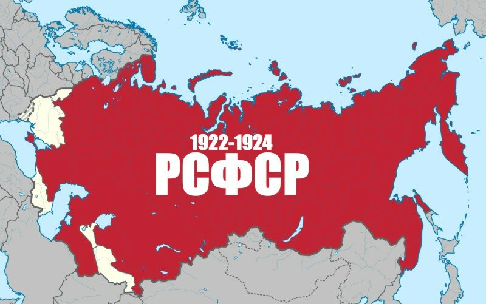

РЕСПУБЛИКИ СССР
ГИМН СССР
ВАЛЮТЫ СССР
РЕСПУБЛИКИ СССР
ГИМН СССР
ВАЛЮТЫ СССР
Что такое РСФСР
СССР
Социалистическое российское государство, существовавшее в период между Октябрьской революцией 1917 года и образованием СССР в 1922 году, было образовано 25 октября (7 ноября) 1917 после свержения Временного правительства. До принятия конституции 19 июля 1918 года единого названия российского государства не существовало, с 19 июля 1918 года официально именовалось Росси́йская Социалисти́ческая Федерати́вная Сове́тская Респу́блика (упоминания этого названия встречаются с февраля 1918 года). Название «Российская Советская Федеративная Социалистическая Республика» было введено Конституцией СССР 1936 года и Конституцией РСФСР 1937 года. Наряду с иными официальными названиями, в советский период также использовались такие неофициальные названия, как Российская Федерация и Россия.
После образования в 1922 году Союза Советских Социалистических Республик и по 1991 год РСФСР — суверенная союзная республика в составе СССР. Была самой крупной по площади, населению и экономической мощи; на её долю приходилось три четверти территории и свыше половины населения, две трети промышленной и около половины сельскохозяйственной продукции Советского Союза.
25 декабря 1991 года официальное название государства было изменено на Российская Федерация (Россия). 26 декабря, в связи с прекращением существования Союза ССР и принятием Советом Республик Верховного Совета СССР соответствующей декларации, Российская Федерация стала его государством-продолжателем и правопреемником
Карта РСФСР(1921-1941)
[ОБРАТНО НА ГЛАВНУЮ] [ОБРАТНО К РЕСПУБЛИКАМ]